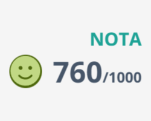
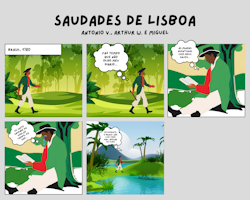
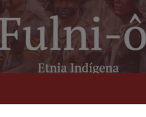
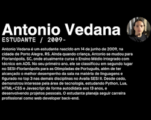
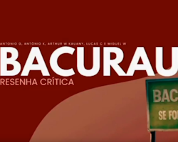
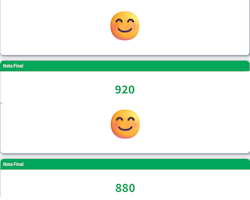
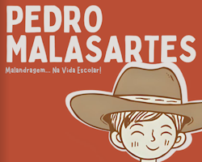
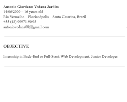
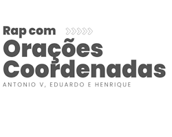
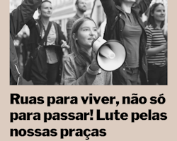

Nessa atividade, o objetivo era escrever uma redação dissertativa (modelo ENEM), num período de até 2 horas, sendo o tema da redação "Como combater a violência das torcidas nos estádios brasileiros de futebol?". Minha nota foi de 760, com nota 160 nas competências 1 e 2, 120 nas competências 3 e 4 e 200 na competência 5. Acredito ter melhorado a minha escrita em comparação ao ano anterior, e os comentários da revisão me ajudaram a compreender os problemas e pontos a melhorar na minha redação.

O objetivo desse trabalho era elaborar, em grupo, uma pequena história em quadrinhos com elementos da literatura pré-romântica brasileira. Dentre as diversas características que compõe tal literatura, o meu grupo utilizou principalmente o sentimentalismo, a melancolia, a saudade de casa e a natureza. Ao final do trabalho, fizemos uma pequena tirinha de cinco quadros, e tivemos uma melhor compreensão do tema a partir da prática.

Nesse trabalho, utilizamos a ferramenta Google Sites para criar um site contendo dados e informações sobre a etnia indígena Fulni-ô. Nele, nosso grupo colocou diversas informações; desde a quantidade populacional da etnia, a região de origem, a língua etc. O trabalho foi fundamental para melhorar a capacidade de pesquisa de cada membro do grupo, junto da capacidade de síntese e resumo.

Para essa atividade, comecei elaborando uma biografia de um parágrafo sobre mim (escrita em terceira pessoa) baseada em biografias profissionais de exemplo. Em seguida, recebi o feedback da professora quanto à minha escrita, coesão e afins. Por fim, transcrevi a biografia revisada para um Canva em formato de card. Essa biografia me ajudou a melhorar a minha escrita e capacidade de síntese.
Habilidades: H22, H24

Essa atividade foi desenvolvida em diversas partes; inicialmente, o grupo elaborou um esboço de roteiro para um vídeo de resenha crítica para o filme escolhido e assistido (nesse caso, Bacurau). Depois, recebemos o feedback da professora e, baseados nesse feedback, finalizamos o roteiro. Após a finalização do roteiro, gravamos e editamos uma versão inicial do vídeo e, bem como o roteiro, recebemos um feedback. Por fim, elaboramos uma versão final do vídeo. Esse trabalho foi divertido de realizar, desde a parte de assistir o filme até elaborar uma resenha e por fim um vídeo completo. Foi necessário um trabalho em grupo coordenado para finalizarmos, o que melhorou a sintonia e harmonia com que trabalhamos num geral.
Habilidades: H23

Este card se refere às duas aplicações da redação online em modelo dissertativo-argumentativo, realizadas nos dias 4 de junho e 12 de agosto. Na primeira aplicação, o tema foi “Proibição do uso de celulares nas escolas: medida necessária para o desenvolvimento infantil?”, em que alcancei a nota de 920. Fiquei muito contente com a evolução em relação à aplicação do primeiro trimestre e percebi alguns pontos que poderia melhorar (como as competências 1 e 5), com o auxílio da revisão da plataforma. Na segunda aplicação (de tema "Alternativas para reduzir a vulnerabilidade dos jovens frente aos golpes virtuais no Brasil"), obtive a nota de 880, um pouco inferior à primeira, mas ainda próxima. Assim como na primeira, percebi onde posso melhorar e acredito que, quanto mais praticar e escrever redações, melhores serão os próximos resultados.
Habilidades: H12

Neste trabalho, tínhamos como objetivo criar um fotoconto (ou fotonovela) a partir da adaptação de um tipo de conto sorteado. Meu grupo trabalhou com um conto popular, tomando como base o personagem Pedro Malasartes (tradicional figura da cultura portuguesa e brasileira), adaptado a um contexto escolar. O formato do fotoconto foi em flipbook. Participei principalmente da diagramação e da revisão, e acredito que o trabalho tenha me ajudado a conhecer melhor a cultura popular do Brasil e compreender sua importância.
Habilidades: H4, H8, H15, H21

Nesta atividade, traduzi meu currículo de 2024 para o inglês, atualizando as informações e formatando-o no Google Docs. Embora tenha sido um trabalho relativamente simples, auxiliou-me na prática da fluência em língua inglesa e também foi útil para revisar meu portfólio do ano passado.
Habilidades: H11, H25
Este card se refere à uma das aplicações da redação online em modelo dissertativo-argumentativo, realizada no dia 16 de outubro. O tema foi “Desafios para combater o racismo ambiental no Brasil”, em que alcancei a nota de 760. Foi uma nota abaixo da minha expectativa, e acredito que eu consiga melhorar nas próximas aplicações, no ano que vem. Meu principal déficit foi na quarta competência, onde alcancei apenas 120 pontos. Embora não tenha sido uma nota a qual eu me orgulhe, acredito que sirva de aprendizado para evoluir e corrigir os meus erros.
Habilidades: H12 - Empregar recursos linguísticos para identificar e apresentar pontos de vista.

Neste trabalho, fizemos um rap utilizando orações coordenadas, para aplicar os conceitos estudados em sala de orações sindéticas, assindéticas etc. Depois de gravarmos o rap, também criamos uma apresentação sobre. Foi um trabalho divertido, principalmente por envolver música e atividade prática.
Habilidades: H6 - Identificar recursos gramaticais e intertextuais empregados na construção de sentido de um texto.

Nesta atividade, produzimos um manifesto (utilizando da linguagem típica desse tipo de texto, como verbos no imperativo e frases escritas na primeira pessoa do plural) sobre a manutenção e criação de espaços de lazer em um bairro específico (neste caso, o Rio Vermelho). Depois da elaboração do manifesto, fizemos um panfleto no Canva com base no nosso manifesto, adaptando-o em um trecho menor para o panfleto. Foi um trabalho relativamente simples de fazer, mas educativo e divertido.
Habilidades: H16 - Relacionar práticas corporais e artísticas à própria vida, ao convívio social e à formação de identidades.